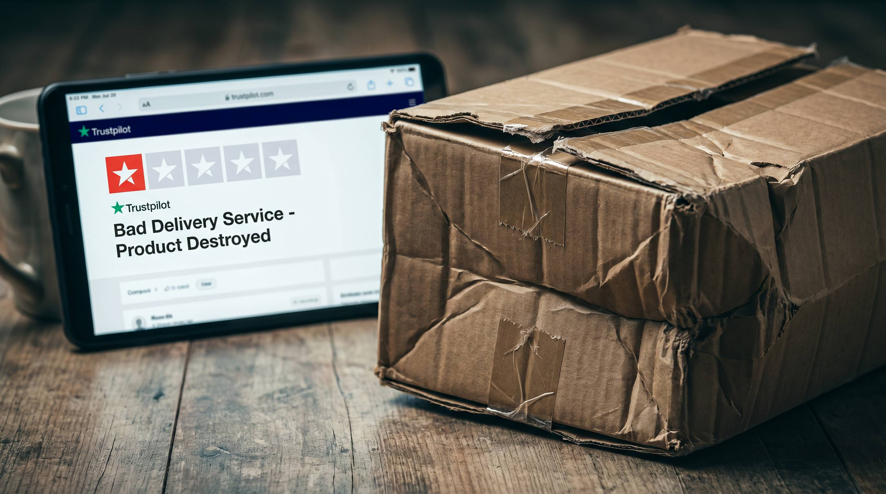

Din fragtleverandoer leverer sent, beskadiget eller slet ikke. Kunden klager til dig, skriver en 1-stjernet anmeldelse på Trustpilot, og din samlet-score falder. Alt imens er det leverandoerens fejl, ikke din.
Det er den ubehagelige virkelighed for mange webshops: din omdommescore er delvist styret af en tredjepart du ikke kontrollerer fuldt ud. Men du kan maale det, styre det og reducere skaden markant.
Her er tallene og handlingsplanen.
👉 SmartPack giver dig fragtfejl-tracking pr. leverandoer saa du kan maele og dokumentere problemet. Se sporingsdata
Sammenhoengen mellem fejlrate og Trustpilot-score
Kunder der modtager en beskadiget, forsinket eller forsvunden pakke er 3-5 gange mere tilboejelige til at skrive en anmeldelse end kunder med en normal oplevelse. Det kaldes negativ anmeldelsesbias.
Lad os beregne effekten:
- 500 ordrer om maaneden med 2% fejlrate = 10 fejlleveringer
- 10 fejlleveringer med 40% anmeldelsesrate = 4 negative anmeldelser
- Hvis du normalt får 8-10 anmeldelser om maaneden, repraesenterer 4 negative en enorm overvaegt
En fragtleverandoer med 2% fejlrate kan nemt koste dig 0,3-0,8 Trustpilot-point over 3-6 maaneder.
Hvad en fragtfejl faktisk koster
Ud over Trustpilot-effekten er der direkte økonomiske omkostninger:
| Omkostningstype | Typisk beloeb |
|---|---|
| Genforsendelse (vare + fragt) | 150-400 kr. |
| Kundeservicetid (20-40 min.) | 100-200 kr. |
| Tabt fremtidig omsætning (churn) | 300-1.500 kr. |
| Trustpilot-score-effekt (omdommeskade) | Svaer at kvantificere, men reel |
Hvornår skal du skifte fragtleverandoer?
Skiftekriterier: fehltrate over 2% i 2-3 på hinanden folgende maaneder, reklamationstid over 7 dage, eller en synlig korrelation mellem fragtfejl og faldende Trustpilot-score.
Skift aldrig koldt: koor begge leverandoerer parallelt i 4-6 uger saa du kan sammenligne fejlrater foer du lukker den ene ned.
SÃ¥dan tracker du det i SmartPack
SmartPack registrerer fragtleverandoer pr. ordre og linker reklamationer til leverandoer. Du kan se fejlrate pr. leverandoer over tid, den gennemsnitlige reklamationstid og den direkte økonomiske effekt af fragtfejl.